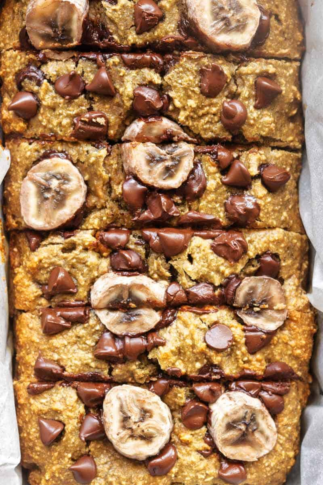

Flourless Banana Bread

Indulge in the Irresistible Goodness of our Flourless Banana Bread—Nourishing, Easy, and Oh-So-Delicious!
Indulge in this wholesome variation of classic quick bread—the Oatmeal Banana Bread! With no flour and no refined sugar, it's a healthy twist. Crafted with only 5 ingredients and prepared effortlessly in a blender, this recipe is simplicity at its finest.
Ingredients:
- 2 cups rolled oats
- 4 bananas
- 2 eggs
- 5 tablespoons honey or maple syrup
- 1 teaspoon baking soda
- 1 cup chocolate chips (optional)
Instructions
- Preheat oven to 180C/350F. Grease loaf pan.
- Blend ingredients for smooth batter. Add chocolate chips, if desired.
- Pour batter into pan. Bake 35-40 minutes or until mostly clean skewer.
- Cool, slice, and enjoy!
Return to main page